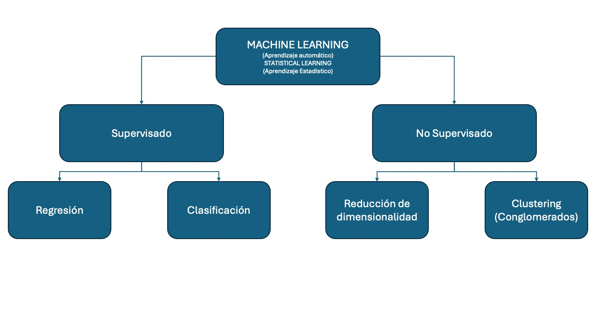

6. Machine Learning#
6.1. El bosque: Inteligencia Artificial#
Visto en un campo más amplio, el Machine Leaning o Aprendizaje Automático es un subconjunto de la Inteligencia Aritificial.

La imagen que antecede nos muestra varios componentes de la Inteligencia Artificial (IA) donde tenemos:
Supervised Learning: Aprendizaje supervisado, se presenta en un círculo más grande puesto que es el que ha tenido más penetración en distintas aplicaciones, tanto desde la perspectiva de aplicaciones en la industria así como avances dado por la comunidad de desarrolladores y la academia. Hoy es posible hacer aprendizaje supervisado de alto nivel en un computador personal.
Unsupervised Learning: Aprendizaje no supervisado, menos popular pero también con aplicaciones en distintas áreas.
Reinforcement Learning: Aprendizaje por refuerzo, inspirada en la psicología conductista, cuya ocupación es determinar qué acciones debe escoger un agente de software en un entorno dado con el fin de maximizar alguna noción de “recompensa” o premio acumulado.
Generative IA: Inteligencia Artificial Generativa, tiene por objetivo la generación de texto, imágenes u otros medios en respuesta a comandos.
Es importante mencionar que la Inteligencia Artificial Generativa está teniendo un gran impacto en distintas aplicaciones, pero el desarrollo de este tipo de IA es limitado a empresas con grandes capitales. Esto se debe a que se estima que desarrollar requiere de una inversión de alrededor de USD 500 millones.
6.2. Machine Learning#
Es un conjunto amplio de herramientas para entender y descrubrir estructras en los datos. Estas herramientas se clasifican en supervisadas y no supervisadas.
{kind=link}
6.2.1. Terminología#
El aprendizaje supervisado implica la construcción de un modelo estadístico para predecir o estimar un resultado en función de una o más variables de entrada. Podemos considerar el aprendizaje supervisado como el uso de una función que asigna variables de entrada a un resultado.
Las variables de entrada tienen muchos nombres, como: x, explicativa (explanatory), predictora (predictor), regresora (regressor), independiente y característica (feature).
La variable de salida también tiene muchos nombres, como: y, respuesta (response), dependiente, objetivo (target), resultado y etiqueta (label).
En el aprendizaje no supervisado, hay entradas pero no salidas supervisadas; no obstante, podemos aprender relaciones y estructuras a partir de esos datos. Los problemas de aprendizaje no supervisado que cubrimos se dividen en dos grandes categorías:
La reducción de dimensionalidad es una técnica para transformar datos de alta dimensión en un espacio de baja dimensión, preservando al mismo tiempo las propiedades útiles de los datos.
La agrupación en clústeres o conglomerados es una técnica que implica encontrar subgrupos, o clústeres, en un conjunto de datos de modo que las observaciones dentro del mismo grupo sean bastante similares entre sí, mientras que las observaciones en diferentes grupos sean bastante diferentes entre sí.